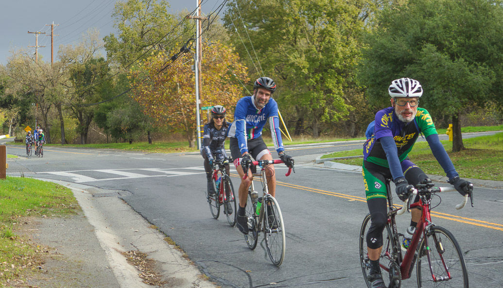

|
 |
 |
|
|
|
|  |
| Frank Paysen leads a group between climbs in Los Altos Hills (Bill Bushnell) |
Thanks to everyone for participating in the first-ever Low-Key Tour of the Los Altos Hills! Even the rain wasn't enough to keep Low-Keyers from completing Bill Bushnell's challenging route. Congrats, all!
Note LGBC's Hal Rooney rode the vast majority of the course but failed to reach all of the checkpoints.
KOM special mention qualifiers indicated with orange background.
| pl | # | name | team | cat | time | mph | fph | score |
|---|---|---|---|---|---|---|---|---|
| 1 | 239 | Katie Quinn | Easy Riders | 30- | 37:14.48 | 9.36 | 3683 | 120.29 |
| 2 | 121 | Jennie Phillips | Sr's & Mr's of No Mercy | 50+ | 37:48.96 | 9.22 | 3627 | 118.57 |
| 3 | 138 | Marty Scott | LGBRC | Just Make It To The Top | 39:15.13 | 8.88 | 3494 | 114.49 |
| 4 | 210 | Chris Davis | LGBRC | 40:56.15 | 8.52 | 3351 | 110.06 | |
| 5 | 800 | Joy Franco | Easy Riders | 3 | 41:17.25 | 8.44 | 3322 | 109.18 |
| 6 | 47 | Bonnie Denoyer | LGBRC | 45+ | 41:29.55 | 8.40 | 3306 | 108.67 |
| 7 | 226 | Anna Janas | Stanford Cycling | Katie's Domestique ;) | 43:58.94 | 7.93 | 3119 | 102.89 |
100 point reference time for division Women = 45:20.11
| pl | # | name | team | cat | time | mph | fph | score |
|---|---|---|---|---|---|---|---|---|
| 1 | 37 | David Collet | Easy Riders | 45+ | 29:06.29 | 11.98 | 4713 | 127.14 |
| 2 | 410 | Carl Nielson | Sr's & Mr's of No Mercy | 55+ | 29:22.35 | 11.87 | 4670 | 126.05 |
| 3 | 84 | David Kalcic | Sr's & Mr's of No Mercy | Junior | 32:26.48 | 10.75 | 4228 | 114.82 |
| 4 | 505 | Lucas Pereira | 35+ | 33:55.57 | 10.28 | 4043 | 110.09 | |
| 5 | 411 | Bruce Pauly | Sr's & Mr's of No Mercy | 55+ | 35:13.05 | 9.90 | 3895 | 106.30 |
| 6 | 21 | Nigel Allen | Oso | 40+ | 37:39.84 | 9.26 | 3642 | 99.80 |
| 7 | 235 | Frank Paysen | Diablo | 55+ | 37:43.96 | 9.24 | 3635 | 99.63 |
| 8 | 211 | Marek Dutkiewicz | Diablo | 50+ | 39:20.82 | 8.86 | 3486 | 95.78 |
| 9 | 114 | Dan Pankratz | LGBRC | 40+ | 42:31.17 | 8.20 | 3226 | 89.05 |
| 10 | 18 | Giles Douglas | 3 | 45:06.44 | 7.73 | 3041 | 84.25 | |
| 11 | 129 | Adem Rudin | Race to Space | Make It To All The Tops | 48:19.73 | 7.21 | 2838 | 78.96 |
| 12 | 139 | ARUN SHARMA | LGBRC | 49:57.51 | 6.98 | 2745 | 76.54 | |
| 13 | 131 | Robert Sare | Stanford intramural Bike club | 25+ | 50:05.63 | 6.96 | 2738 | 76.35 |
| 14 | 502 | Richard Contreras | rhus | Wet | 75:40.89 | 4.61 | 1812 | 51.82 |
100 point reference time for division Men = 37:34.97
| pl | # | name | team | cat | time | mph | fph | score |
|---|---|---|---|---|---|---|---|---|
| 1 | 6 | Bill Bushnell | Low-Key | 21:18.38 | 16.36 | 6438 | 102.34 |
100 point reference time for division Hybrid Electric = 21:50.27
| pl | team | score | riders |
|---|---|---|---|
| 1 | Sr's & Mr's of No Mercy | 359.44 | Jennie Phillips, Bruce Pauly, Carl Nielson, David Kalcic |
| 2 | Easy Riders | 356.61 | Joy Franco, Katie Quinn, David Collet |
| 3 | LGBRC | 333.23 | Bonnie Denoyer, Chris Davis, Marty Scott, ARUN SHARMA, Dan Pankratz |
| 4 | Diablo | 195.41 | Frank Paysen, Marek Dutkiewicz |
| 5 | 194.34 | Giles Douglas, Lucas Pereira | |
| 6 | Stanford Cycling | 102.89 | Anna Janas |
| 7 | Low-Key | 102.34 | Bill Bushnell |
| 8 | Oso | 99.80 | Nigel Allen |
| 9 | Race to Space | 78.96 | Adem Rudin |
| 10 | Stanford intramural Bike club | 76.35 | Robert Sare |
| 11 | rhus | 51.82 | Richard Contreras |